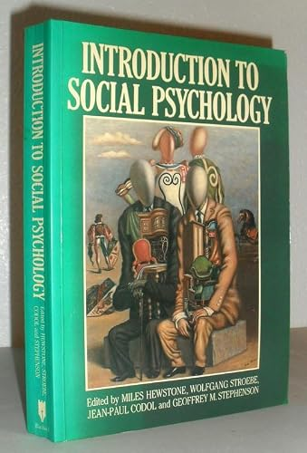
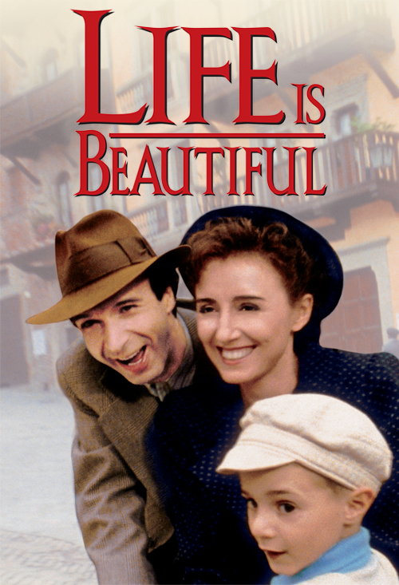
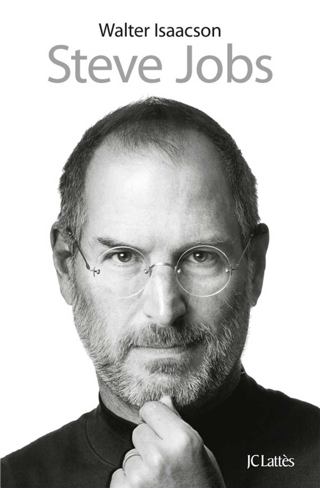
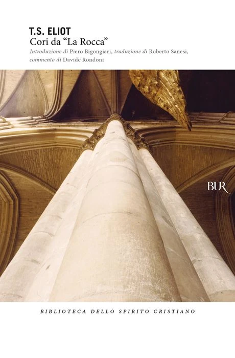

1:05:26 · 16 OPERE
Introduzione alla psicologia sociale.
Il filo del discorso
Dr Divago affronta la psicologia sociale attraverso una lettura fortemente critica del rapporto fra conoscenza e potere. Parte da The Power Elite di C. Wright Mills e dal problema della responsabilità di chi decide l’uso delle tecnologie; passa poi a un manuale Blackwell e al capitolo di Eddy Van Avermaet sull’influenza nei piccoli gruppi. La domanda che attraversa il video è come si formi un giudizio autonomo quando informazioni, autorità e appartenenze sociali agiscono insieme. Il percorso include l’effetto autocinetico di Sherif, l’incertezza situazionale, la conformità e la distinzione fra influenza informativa e normativa. La scheda tiene separati i livelli che il discorso accosta: gli esperimenti storici, gli esempi inventati dal relatore e le sue applicazioni alla società contemporanea. Il caso di mela e matita è un’illustrazione orale; il confronto fra giudizi dichiarati corretti e scorretti rinvia a Kelman, citato nell’introduzione dell’articolo di Sherif e Harvey. La descrizione di un meccanismo d’influenza non dimostra che ogni ricercatore voglia manipolare, né prova un piano coordinato per le vicende sanitarie o politiche evocate. Alice Miller introduce il rapporto fra crescita personale, fiducia e vulnerabilità, mentre alcune metafore mettono a fuoco il rischio di ridurre l’individuo a esecutore. Platone associa la filosofia alla meraviglia; Shakespeare domanda che cosa resti di una vita limitata al consumo; Wells immagina un futuro nel quale cultura e divisione sociale hanno assunto forme estreme. Il ritorno al finale di Mills sposta l’attenzione dalla reputazione dei potenti ai criteri con cui sono selezionati e resi responsabili. Le polemiche su persone, biografi, organizzazioni finanziarie e professioni rimangono attribuite a Dr Divago: né la somiglianza di un nome né una partita di scacchi consentono le conclusioni generali che egli suggerisce. Il finale insiste sulla verifica delle informazioni e sul coraggio di ragionare richiamato da Kant. Il tempio dei cori di Eliot e il discorso di Antonio nel Giulio Cesare offrono una conclusione letteraria sul valore del giudizio. La sintesi si basa sulla trascrizione automatica; date, luoghi e attribuzioni richiedono le precisazioni riportate nella scheda.
I libri nel discorso

The Power Elite (L’élite del potere)
Copertina di una edizione inglese: Oxford University Press 2000, nuova edizione con postfazione Alan Wolfe, ISBN 9780195133547. Il colophon editoriale distingue prima pubblicazione 1956 e primo paperback Oxford 1959. Il 1959 citato nel filmato per la traduzione italiana Feltrinelli non è attribuito alla copertina inglese 2000.
Edizione Oxford 2000 con postfazione Alan Wolfe. Non copertina della traduzione italiana citata né prima edizione 1956.
Titolo e autore espliciti; lettura del finale a 2338 e 2962 secondi. Prima pubblicazione 1956, non il 1954 iniziale.
Passaggio 2:33 ↗ · Fonti e libro ↗
Dollarocracy. How the Money and Media Election Complex Is Destroying America
Copertina: Paperback2settembre 2014, ISBN 9781568589534,368 pagine nel catalogo Hachette/Bold Type Books, prefazione Bernie Sanders. Prima uscita 2013 nella storia editoriale Nation Books; il catalogo corrente usa il marchio Bold Type Books. Copertina autentica della edizione paperback, non prova della edizione usata nel filmato.
Immagine autentica dell’opera, controllata visivamente; l’edizione di riferimento non è attribuita al filmato.
Titolo pronunciato nel ragionamento sul denaro e sull’appropriazione del merito.
Passaggio 4:18 ↗ · Fonti e libro ↗
Introduction to Social Psychology. A European Perspective
Copertina: Basil Blackwell · prima edizione 1988, esemplare fotografato
Fotografia autentica dell’esemplare offerto da Washburn Books, inventario 30280785882: copertina verde completa con titolo e tutti i curatori leggibili, illustrazione centrale e dorso visibili. Il catalogo descrive il cartaceo 1988, ISBN 9780631151647, distinto dal rilegato ISBN 9780631151630 e dalle edizioni 1996/2001/2008. Non è provato che si tratti della stessa legatura mostrata nel video.
Titolo, Blackwell e data 1988 nel parlato; curatori e rapporto con il capitolo verificati nelle fonti.
Passaggio 11:36 ↗ · Fonti e libro ↗Social Influence in Small Groups
Copertina: Copertina del volume contenitore · Introduction to Social Psychology, Blackwell 1988
La fotografia illustra il volume Blackwell che contiene il capitolo: non esiste qui una copertina autonoma del saggio di Van Avermaet. ISBN 9780631151647 appartiene al manuale collettaneo, non al contributo. Il nome dell’autore del capitolo non deve comparire come autore unico del volume fotografato. Si conserva la stessa immagine autentica usata nella voce del manuale, dichiarando questa relazione.
Titolo, autore e numero 16 espliciti; letture a 974 e 3322 secondi.
Passaggio 14:50 ↗ · Fonti e libro ↗La fiducia tradita. Violenze e ipocrisie dell’educazione
Copertina: Garzanti · Saggi blu ·1991
Fotografia autentica dell’edizione Garzanti 1991, nella risoluzione originale 128 × 195. Non ingrandita artificialmente; edizione non attribuita al video.
Alice Miller e titolo espliciti; genitori e crescita della personalità sono il tema del richiamo.
Passaggio 26:26 ↗ · Fonti e libro ↗
Teeteto, o sulla scienza
Identificazione probabile
Copertina: Feltrinelli · 1994 · traduzione di Luca Antonelli, introduzione di Salvatore Natoli, saggio di Davide Spanio
Immagine autentica dell’opera, controllata visivamente; l’edizione di riferimento non è attribuita al filmato.
Platone, meraviglia, Iris e Thaumas identificano probabilmente 155d; titolo non pronunciato.
Passaggio 34:22 ↗ · Fonti e libro ↗
Amleto
Copertina: BUR · 2022 · traduzione di Rocco Coronato · illustrazioni di John Austen
Immagine autentica dell’opera, controllata visivamente; non identifica l’edizione usata nel video.
Titolo, Shakespeare e passaggio su cibo e sonno, ripreso a 3275 secondi; localizzazione corretta IV, 4.
Passaggio 35:01 ↗ · Fonti e libro ↗
La macchina del tempo
Copertina: Feltrinelli · Universale Economica, I classici
Wells, titolo inglese/italiano, Eloi e Morlock espliciti. Resti dei libri presenti nel romanzo; ricordo scenico distinto dal testo verificato.
Passaggio 35:38 ↗ · Fonti e libro ↗
La Repubblica
Identificazione probabile
Copertina: Laterza · La Repubblica · edizione con testo a fronte di riferimento
Immagine associata all’ISBN di riferimento e controllata visivamente; edizione e traduzione non identificate come quelle citate o lette nel video.
Filosofo regnante o regnante filosofo identifica probabilmente V, 473c–e, senza attribuire un’edizione.
Passaggio 39:28 ↗ · Fonti e libro ↗
La società aperta e i suoi nemici
Identificazione probabile
Copertina: Armando Editore · Classici · 2018 · volume unico
Copertina autentica di riferimento, controllata visivamente. L’edizione non è identificata come quella usata nel video.
Riferimento riconoscibile alla collocazione di Platone fra i nemici della società aperta, senza autore o titolo completo nel parlato.
Passaggio 39:52 ↗ · Fonti e libro ↗
La vita è bella
Locandina internazionale Miramax: Film del 1997 diretto da Roberto Benigni. Locandina internazionale di catalogo Miramax con il titolo Life Is Beautiful.
Locandina autentica del catalogo Miramax, con Benigni, Nicoletta Braschi e Giorgio Cantarini e titolo inglese rosso. Non è presentata come prima locandina italiana del 1997 né come copertina di un libro.
Benigni e titolo espliciti con ricordo di una scena; non si attribuisce un’edizione home video.
Passaggio 42:48 ↗ · Fonti e libro ↗
Einstein: His Life and Universe
Identificazione probabile
Copertina: Simon & Schuster, trade paperback, 13 maggio 2008, 704 pagine. Immagine corrente distribuita dall’editore per l’ISBN 9780743264747.
Copertina autentica con ritratto di Einstein, titolo dorato, sottotitolo bianco e fascia rossa con Walter Isaacson. L’immagine corrente richiama anche Steve Jobs fra le opere dell’autore: non si assume che ogni elemento grafico appartenesse alla prima tiratura del 2008. Non è identificata una precisa lingua o edizione nel filmato.
Isaacson e biografia di Einstein espliciti; il titolo esatto è riscontrato nel repertorio e non pronunciato per esteso.
Passaggio 45:36 ↗ · Fonti e libro ↗
Steve Jobs
Identificazione probabile
Copertina: Immagine dell’edizione francese JC Lattès, 26 ottobre 2011, 668 pagine, ISBN 9782709638326. Opera originale inglese: Simon & Schuster, 24 ottobre 2011, 656 pagine, ISBN 9781451648539.
Copertina autentica JC Lattès con ritratto di Steve Jobs in bianco e nero, mano al mento, autore in alto e marchio editoriale in basso. La copertina è dell’edizione francese, dichiarata; l’ISBN inglese non viene attribuito a questa immagine. Il filmato non certifica una specifica edizione mostrata.
Isaacson e biografia del fondatore di Apple identificano probabilmente il libro già presente.
Passaggio 45:48 ↗ · Fonti e libro ↗
Risposta alla domanda: che cos’è l’Illuminismo?
Copertina della raccolta che comprende il saggio sull’Illuminismo: Firenze University Press · Sette scritti politici liberi · 2011 · a cura di Maria Chiara Pievatolo
Copertina del volume cartaceo FUP che comprende il saggio, riscontrato dal catalogo universitario. L’ISBN appartiene alla raccolta; il filmato non annuncia un’edizione e il titolo del saggio è un’identificazione probabile della citazione.
Autore, titolo e sapere aude espliciti.
Passaggio 1:03:26 ↗ · Fonti e libro ↗
Cori da “La Rocca” (Choruses from The Rock)
Identificazione probabile
Copertina: BUR · I libri dello spirito cristiano, ISBN 9788817043625
Copertina autentica scaricata direttamente dal catalogo Rizzoli: titolo, T. S. Eliot, introduzione Bigongiari, traduzione Sanesi e commento Rondoni leggibili, marchio BUR. L’ISBN 9788817043625 è quello indicato nella scheda editoriale corrente; il nome file troncato non è usato come identificatore bibliografico. La scheda associa il libro al 1994, ma non si assume che questa specifica veste grafica sia della prima tiratura 1994 o sia la copia citata nel video.
Eliot e il contrasto fra chi costruisce e chi ostacola il tempio identificano probabilmente il coro IV sul sito ufficiale.
Passaggio 1:04:07 ↗ · Fonti e libro ↗
Giulio Cesare
Copertina: Feltrinelli · Universale Economica I Classici · 2013
Copertina autentica dell’edizione di riferimento, non attribuita all’esemplare del video.
Shakespeare, titolo e immagine del giudizio fuggito fra le belve; riscontro nel discorso di Antonio III, 2.
Passaggio 1:04:58 ↗ · Fonti e libro ↗